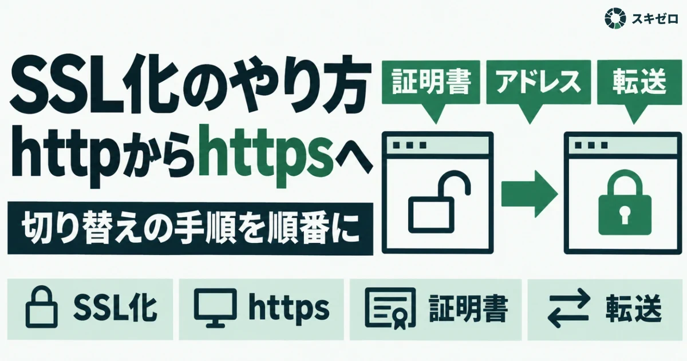
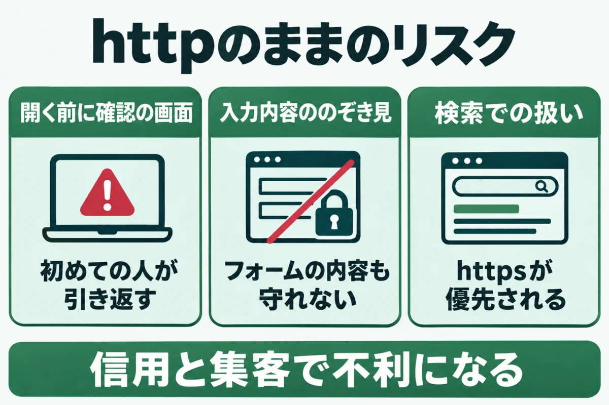
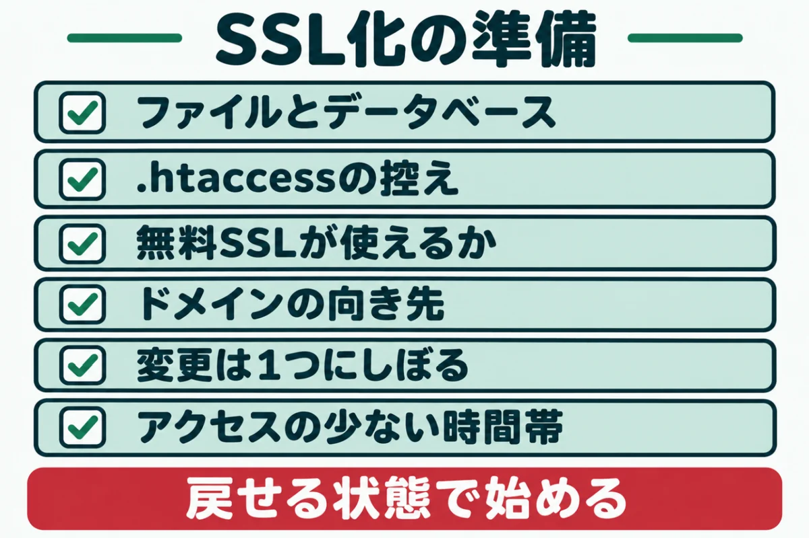
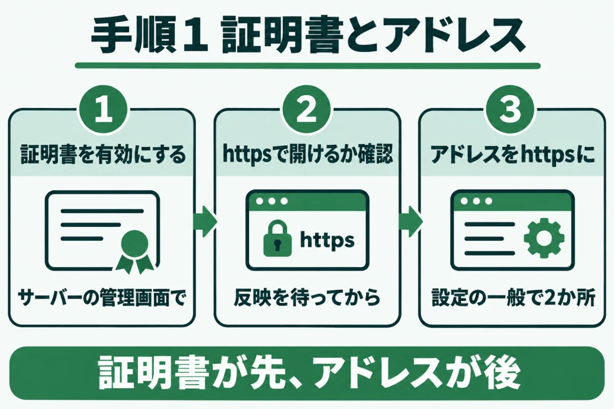
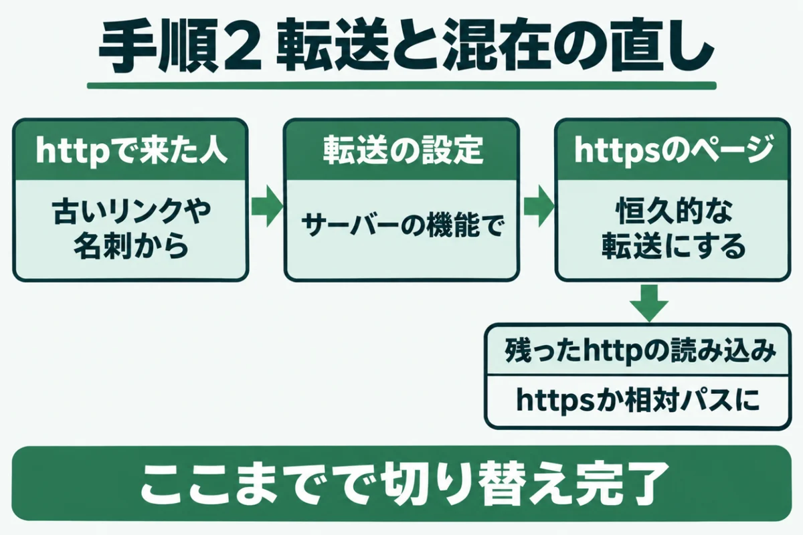
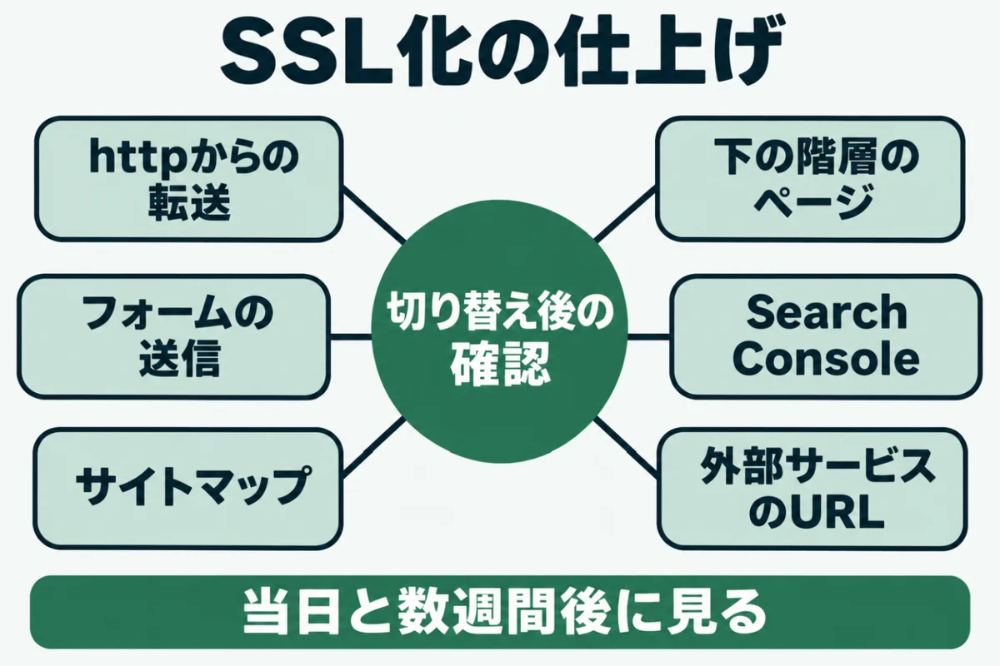

ホームページのSSL化のやり方httpsになっていないサイトのリスクと切り替え手順

自社のホームページのアドレスが、まだ「http」のままになっていませんか？
httpのサイトは通信が暗号化されず、ブラウザに警告が出ます。2026年10月からは、Chromeが開く前に確認の画面を出すようになりました。
この記事では、httpからhttpsへ切り替える一連の手順をまとめます。準備、証明書、WordPressの設定、転送、切り替え後の確認の順に進めてください。
内容は、サーバー会社のマニュアルとWordPress、Googleの公式の案内で確かめました。確かめた日は2026年11月26日です。
SSL化のやり方の前に知りたい、httpのままのリスク

httpのままのサイトは、訪れた人とサイトの間の通信が暗号化されていません。そのため、警告、のぞき見、検索の3つの面で不利になります。
とくに警告の出方は、2026年10月から一段ときびしくなりました。SSL化のやり方に入る前に、放っておくと何が起きるのかを押さえてください。理由が分かると、社内で作業の時間を取る説明もしやすいでしょう。
Chromeは開く前に確認の画面を出すようになった
Googleは2026年10月21日に、Chromeの変更を公表しました。httpのサイトへつなぐ前に、利用者の許可を求める動きが既定になっています。初めて訪れた人には、開く前に確認の画面が出るのです。いちど許可すると、訪問が2週間以上あくまでは再び出ないとされています。それでも、最初の画面で引き返す人は出るでしょう。Chromeのヘルプによると、対象はhttpsに対応していないサイトです。httpsで開けるようにすることが、この画面を出さない近道になります。
- 参考：Chrome Now Warns Before Insecure HTTP Connections（2026年10月21日）｜Google
- 参考：Chrome の安全性とセキュリティを管理する｜Google Chrome ヘルプ
入力した内容をのぞき見や書き換えから守れない
Chromeのヘルプは、httpのサイトについて次のように説明しています。送受信される情報は、何者かに見られたり変更されたりする可能性があるという内容です。問い合わせフォームに入れた名前や電話番号も、守られないまま送られます。アドレス欄には「保護されていない通信」と表示されるでしょう。ヘルプは、直すにはサイトの持ち主がhttpsを使う必要があるとも書いています。表示の原因の切り分けは、別の記事にまとめました。「保護されていない通信」と表示される原因と直し方を見てください。
検索ではhttpsのページが優先して扱われる
Googleは2014年8月に、httpsを検索の順位づけの合図に使い始めたと発表しました。影響は全世界の検索の1%未満で、ごく軽い合図だという説明です。Search Consoleのヘルプには、別の扱いも書かれています。httpとhttpsの両方があれば、httpsを優先して登録するという説明です。Googleは、利用者を守るためにhttpsを使うことを強く勧めています。順位が大きく上がると期待するより、不利を残さない手当てと考えてください。
SSL化のやり方の準備：バックアップとサーバーの確認

SSL化のやり方で最初に行うのは、設定の変更ではなく準備です。バックアップ、無料SSLの確認、段取りの3点を先に済ませてください。
SSL化では、WordPressのアドレスとサーバーの設定の両方に手を入れることになります。途中でつまずいても戻せるようにしておけば、落ち着いて進められるでしょう。準備の3点は、どれもサーバーとWordPressの管理画面で確かめられます。
切り替える前にバックアップを取る
作業の前に、サイトのファイルとデータベースの両方を控えておきます。SSL化では、WordPressの設定と.htaccessというファイルに手を入れるからです。書き換える前の.htaccessも、別に保存してください。運営者の自社サイトのサーバーには、自動バックアップがあります。保存されるのは、Webデータが7日分、データベースが14日分でした。自動の控えがあっても、作業の直前の状態を手元に残すと安心です。控えから戻す手順も、先にサーバーのマニュアルで確かめておきましょう。
サーバーの無料SSLが使えるかを確かめる
エックスサーバーなど、この記事で確かめた4社はどこも無料の証明書を用意しています。Let's Encryptは、無料で証明書を発行する自動化された認証局です。さくらのレンタルサーバの無料SSLは、このLet's Encryptを使っています。ただし、ドメインの向き先によっては発行できません。エックスサーバーは、wwwあり・なしの両方が契約のサーバーを向く必要があるとしています。ConoHa WINGも、ネームサーバーをConoHaにする必要があるという案内です。
- 参考：Let's Encrypt について｜Let's Encrypt
- 参考：無料独自SSL設定｜エックスサーバー
- 参考：無料独自SSLを設定する｜ConoHa WINGサポート
- 参考：無料SSL（Let's Encrypt）を設定したい｜さくらのサポート情報
作業の順番と時間帯を決めておく
Googleは、httpからhttpsへの変更をサイトの移転の1つとして扱っています。移転の手引きで勧められているのは、一度に行う変更を1つにしぼることです。デザインの変更などを同時に進めないようにしましょう。アクセスの少ない時間帯に作業することも勧められています。小さなサイトなら、全ページを一度に切り替える進め方が向いているという説明です。順番は、証明書、WordPressのアドレス、転送、確認の流れで進めてください。
SSL化のやり方の手順1：証明書を入れてWordPressのアドレスを変える

SSL化のやり方の手順1は、サーバーで証明書を有効にすることから始まります。証明書が先、WordPressのアドレスが後という順番を守ってください。
証明書が入る前にアドレスだけをhttpsに変えると、サイトが開けなくなるおそれがあります。証明書の反映には時間がかかるので、httpsで開けることを確かめてから次へ進みましょう。WordPressを使っていないサイトは、アドレスの変更を飛ばして手順2へ進めます。
サーバーの管理画面で証明書を有効にする
エックスサーバーでは、サーバーパネルの「SSL設定」を開きます。対象のドメインの設定を「ON」にすれば、設定は完了です。マニュアルによると、反映まで最大1時間ほどかかります。ロリポップは「証明書お申し込み・設定」から設定し、完了まで5分ほどという案内です。さくらのレンタルサーバは、発行に数十分から数時間かかるとしています。反映を待ってから、httpsのアドレスで開いてください。警告が出ずにページが開けば、証明書は働いています。
WordPressのアドレスをhttpsに変える
管理画面の「設定」から「一般」を開きます。直す欄は、「WordPress アドレス (URL)」と「サイトアドレス (URL)」です。どちらも、httpの後ろに「s」を足して保存します。ここがhttpのままだと、切り替えは終わりません。運営者の自社サイトでも、httpのまま残っているものがありました。打ち間違えると、管理画面に入れなくなることがあるでしょう。公式ドキュメントには、wp-config.phpにアドレスを書いて戻す方法が載っています。
サイトヘルスの切り替え機能を使う方法もある
WordPress 5.7からは、本体にhttpsへの切り替えを助ける機能が入りました。証明書が入っていると、「ツール」の「サイトヘルス」に切り替えのボタンが出ます。押すと、2つのアドレスがまとめてhttpsに書き換わる仕組みです。うまく認識できないときは、自動で元に戻ります。古い記事に残った自分のサイトのhttpのアドレスも、表示のときに置き換えられるのです。ConoHa WINGには、WordPress内の設定を自動で行う「かんたんSSL化」があります。
- 参考：Improved HTTPS detection and migration in WordPress 5.7｜Make WordPress Core
- 参考：WordPressかんたんSSL化を利用する｜ConoHa WINGサポート
SSL化のやり方の手順2：httpからhttpsへ転送し、混在コンテンツを直す

SSL化のやり方の手順2は、httpのアドレスで来た人をhttpsへ送る設定です。あわせて、ページの中に残ったhttpの読み込みを直します。
サーバーによっては、証明書を入れた直後はhttpとhttpsの両方でサイトが開く状態です。古いリンクや名刺のアドレスから来た人は、httpのページを見ることになるでしょう。転送と混在の直しまで終えて、切り替えは完了します。
サーバーの機能でhttpをhttpsへ転送する
エックスサーバーのマニュアルには、大事な注意が書かれています。証明書を入れただけでは、自動で転送されません。転送は、「ドメイン設定」でドメインの詳細を開いて設定する方法が手軽です。HTTPS転送設定の「HTTPSに転送する」にチェックを入れて保存してください。さくらのレンタルサーバにも、同じ名前のチェック欄があります。ConoHa WINGは、SSLを設定すると自動で転送される仕組みです。使っているサーバーがどちらの型かを、マニュアルで確かめましょう。
.htaccessで転送するときはマニュアルの記述を写す
エックスサーバーのマニュアルには、.htaccessに記述を足す方法も載っています。足すときは、既存の設定を消さず、先頭に追記するのが勧められている形です。記述は自分で考えず、サーバーのマニュアルのとおりに写してください。マニュアルの記述は、301という恒久的な転送を指定しています。Googleも、移転では301などの恒久的な転送を使うよう勧めているのです。転送は、一般に1年以上、できるだけ長く残すよう案内されています。
混在コンテンツを見つけて直す
httpsのページがhttpで画像などを読み込む状態を、混在コンテンツと呼びます。MDNによると、画像や動画、音声の読み込みはhttpsへ自動で切り替わる仕組みです。スクリプトなどそれ以外の読み込みは止められます。そのため、表示が崩れたり、機能が動かなくなったりするのです。見つけるには、ブラウザの開発者ツールのコンソールに出る警告を見てください。自分のサイトの部品は、httpsか相対パスに書き換えます。外部の部品も、httpsのアドレスに直しましょう。
SSL化のやり方の仕上げ：切り替え後に確かめること

SSL化のやり方の最後は、切り替えたあとの確認です。表示、検索への知らせ、外部の登録の3つを順に見ます。
設定が済んでも、転送されないページや古いアドレスの登録が残ることは珍しくありません。切り替えた当日に済ませるものと、数週間かけて見守るものに分けて進めてください。確認の結果は、日付と一緒に残しておくと次の担当者も助かるでしょう。
表示と転送を自分の目で確かめる
まず、httpのアドレスを入力して、httpsへ切り替わるかを見ます。トップだけでなく、下の階層のページでも試してください。さくらのサポート情報には、トップだけが転送される例が載っています。問い合わせフォームからの送信も、1件試しておくと安心です。運営者の自社サイトは、外からの点検で証明書の残りが33日でした。期限の見方は、別の記事で扱っています。SSL証明書の期限切れを防ぐ方法と確認のしかた｜有効期間は47日へ短くなるを見てください。
Search Consoleとサイトマップを更新する
Search Consoleでは、httpsのアドレスのサイトも確認できる状態にします。Googleの手引きは、新旧の両方を確認するよう勧めているのです。アドレス変更ツールは、httpsへの移行では不要と書かれています。サイトマップは、httpsのアドレスに直したものを送信してください。順位は、再び読み込まれる間に一時的に変動することがあるでしょう。中規模のサイトでは、反映に数週間以上かかる場合があるという説明です。
外部サービスに登録したURLを直す
転送があっても、外に登録したアドレスはhttpsに直しておきます。Googleの手引きは、SNSのプロフィールや広告のリンク先を例に挙げました。転送は表示を遅くするため、届け先のアドレスを直接httpsにするほうがよいという理由です。地図の店舗情報やメールの署名も、あわせて見直してください。落ち着いたら、httpsだけで開くようブラウザに伝えるHSTSも検討できます。注意点は、次の記事にまとめました。セキュリティヘッダーとは？ホームページに入れたい6つの設定｜確かめ方と入れるときの注意です。
URLを入れるだけで、SSL証明書の状態など8項目を無料で判定します。httpsへの切り替えや転送の設定は、対策作業（14,800円から・税込）でもお受けしています。
無料で診断するSSL化のやり方に関するよくある質問
SSL化の作業には、どのくらいの時間がかかりますか？
証明書が使えるようになるまでの時間は、サーバーによって違います。エックスサーバーは最大1時間ほど、ロリポップは5分ほどという案内です。さくらのレンタルサーバは、数十分から数時間かかるとしています。WordPressのアドレスの変更と転送の設定は、画面の操作だけなら短い時間で済むでしょう。混在コンテンツの直しは、ページの数によって変わります。検索への反映は、Googleによると数週間以上かかることがあるのです。
WordPressではないホームページも、同じやり方でSSL化できますか？
証明書を入れる手順と、転送の設定は同じです。違うのは、WordPressのアドレスの設定がない点になります。代わりに、HTMLのファイルに書かれたhttpのアドレスを自分で直してください。エックスサーバーのマニュアルは、httpsに変えるか相対パスにするよう案内しています。アクセス解析のタグなど、外部から読み込む部品も確かめましょう。ほかのプログラムを使っている場合は、提供元の案内に従うのが安全です。
SSL化のあとに管理画面へ入れなくなったら、どうすればよいですか？
まず、直前に変えた設定を元に戻します。.htaccessを書き換えたなら、控えておいた内容に戻してください。WordPressのアドレスを打ち間違えた場合は、wp-config.phpで直せます。公式ドキュメントに、2つのアドレスをこのファイルに書く方法が載っているのです。ブラウザが転送を覚えていて、戻したのに直らないように見えることもあるでしょう。別のブラウザでも試し、難しければサーバー会社や専門家に相談してください。
SSL化は、プラグインを入れるだけで済みますか？
プラグインだけでは済みません。証明書は、サーバーの側で入れる必要があるからです。WordPress 5.7以降は、本体の機能でアドレスをhttpsに切り替えられます。まずは、本体とサーバーの機能で進めるのがよいでしょう。さくらのレンタルサーバは、専用のプラグインについて注意を載せています。テーマなどの設定画面に直接入れたhttpのアドレスは、変更できないという内容です。プラグインを使う場合も、残ったhttpのアドレスは自分の目で確かめてください。
SSL化したら、httpのアドレスはもう使えなくなりますか？
転送を設定してあれば、httpのアドレスから来た人もhttpsのページに届きます。古いリンクや印刷物のアドレスを、すぐに全部直す必要はありません。ただし、転送の設定を消すと届かなくなるので注意してください。Googleは、転送を一般に1年以上、できるだけ長く残すよう勧めています。利用者のことを考えると、期限を決めずに残しておくのがよいでしょう。自分で直せるリンクは、少しずつhttpsのアドレスに書き換えてください。
まとめ
httpのままのサイトは、警告、のぞき見、検索の3つの面で不利になります。2026年10月からは、Chromeが開く前に確認の画面を出すようになりました。早めに切り替えておきましょう。
手順は、準備、証明書、アドレス、転送、確認の順です。切り替えたあとは、表示とSearch Console、外部の登録を見直してください。
まずは、今の状態を知るところから。
URLを入れるだけで、数十秒で判定が出ます。登録はいりません。